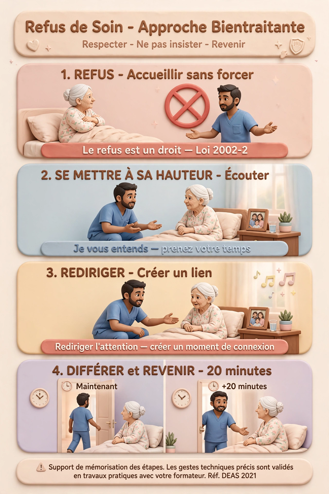
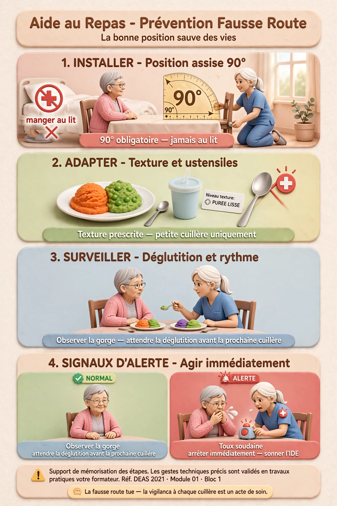

Ce qu'on y trouve
- Ses habitudes de vie : heure de lever, alimentation, rituels
- Ses loisirs et activités préférées
- Son histoire de vie — profession, famille, valeurs
- Ses préférences religieuses ou culturelles
- Ses relations importantes (famille, amis)
Accompagnement dans les activités de la vie quotidienne et sociale · DEAS 2021
Toute personne a le droit d'être informée sur son état de santé, les soins prévus et les alternatives. L'AS informe dans la limite de ses compétences.
Aucun soin ne peut être réalisé sans le consentement libre et éclairé de la personne. Un refus se respecte — et se transmet à l'IDE.
Tout ce que vous voyez, entendez ou lisez dans le cadre du soin reste confidentiel. Le secret professionnel s'applique même après votre service.
Chaque personne mérite respect et considération, quelle que soit son état, sa dépendance, ses difficultés relationnelles ou son comportement.
La chambre est l'espace privé de la personne. Frapper, attendre la réponse, ne jamais entrer sans permission — même pour un soin rapide.
En EHPAD, chaque résident a un projet de vie individualisé. L'AS le connaît et l'intègre dans chaque accompagnement — habitudes, goûts, rituels.
Le projet de vie, c'est le document qui dit qui est la personne au-delà de sa pathologie. L'AS le consulte dès son arrivée dans un service.
La grille AGGIR (Autonomie Gérontologie Groupes Iso-Ressources) évalue le niveau de dépendance. Elle détermine le GIR (Groupe Iso-Ressources) de 1 à 6 — utilisé pour calculer l'APA (Allocation Personnalisée d'Autonomie).
Personne alitée, troubles mentaux graves, fonctions vitales altérées. Besoin permanent d'une présence soignante.
Personne alitée ou en fauteuil, fonctions mentales peu ou pas altérées, aide indispensable pour les actes quotidiens.
Conserve son autonomie mentale, se déplace, mais nécessite une aide pluriquotidienne pour l'hygiène et les repas.
Se lève, se déplace, s'habille seul mais a besoin d'aide pour le bain ou la douche, la cuisine et le ménage.
Assure seul les actes essentiels mais a besoin d'aide ponctuelle pour le bain, la préparation des repas.
Assure seul tous les actes de la vie quotidienne. N'est pas éligible à l'APA.

⚠️ Support de mémorisation des étapes.
Les gestes techniques précis sont validés en travaux pratiques avec votre formateur.
Réf. DEAS 2021 · Module 01 · Bloc 1 · Loi 2002-2
Frapper, attendre la réponse, se présenter, expliquer ce qu'on va faire. Préparer TOUT le matériel avant de commencer — ne jamais laisser la personne seule à mi-soin.
Eau tiède sans savon (sauf demande). Yeux : compresse humide de l'angle interne vers l'externe. Changer de compresse entre les deux yeux — jamais le même côté.
Savonner, rincer, sécher soigneusement — particulièrement les plis (aisselles, plis mammaires). Observer la peau à chaque passage.
Observer les chevilles (œdèmes), les espaces entre les orteils (mycose, macération), la plante des pieds (diabétique++).
Moment clé d'inspection : sacrum, omoplates, talons. Toute rougeur persistante = signaler à l'IDE immédiatement.
Changer de gants obligatoirement. De l'avant vers l'arrière chez la femme — jamais l'inverse (contamination urinaire). Séchage soigneux.
Habiller selon les préférences. Coiffer, raser si l'habitude. Installer confortablement. Tracer les observations dans le dossier.
Alimentation standard sans modification. Tous aliments autorisés.
Viandes hachées, légumes coupés en petits morceaux. Mastication facilitée.
Consistance homogène et lisse. Pas de morceaux. Pour troubles de mastication.
Eau gélifiée, jus épaissis. Pour troubles de déglutition (dysphagie). Sur prescription.
La fausse route, c'est quand un aliment ou un liquide "prend le mauvais chemin" et va dans les poumons plutôt que dans l'estomac. C'est une urgence.

⚠️ Support de mémorisation des étapes.
Les gestes techniques précis sont validés en travaux pratiques avec votre formateur.
Réf. DEAS 2021 · Module 01 · Bloc 1
Quantité normale : 1 à 1,5 L/jour. Signaler si < 500 mL/24h.
Fréquence normale : 3/jour à 3/semaine. Signaler toute constipation > 3 jours.
La personne âgée, surtout si elle a des troubles cognitifs, exprime rarement sa douleur en mots. L'AS apprend à lire les signes.